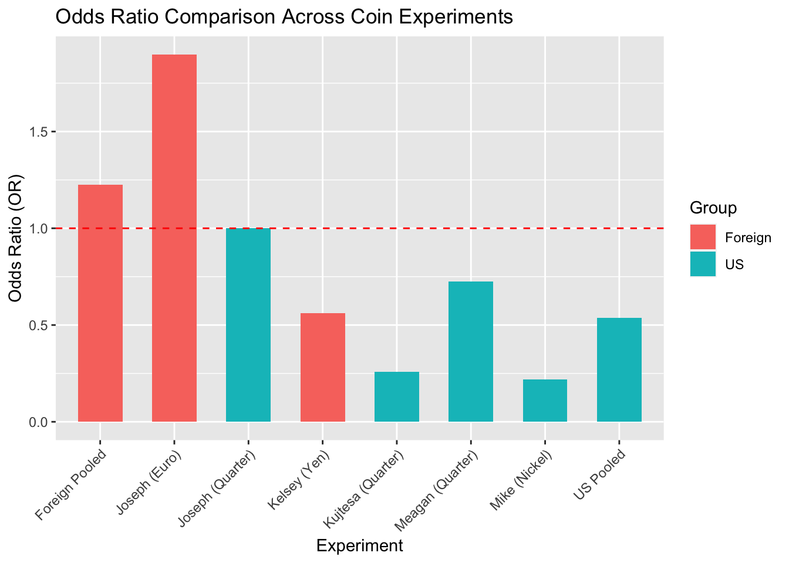

For this discussion, I did not spin any coins myself, but I built on the experiments my classmates shared. I wanted to explore the question: “Can we combine experiments to get a stronger conclusion, and if so, how do we do it responsibly?”
This analysis uses ideas from Lecture 10 like odds ratios, contingency tables, and careful thought about bias when combining data. By comparing the results of lighter US coins (nickel and quarters) with heavier foreign coins (yen and euro), I wanted to see if our combined efforts reveal something interesting that one experiment alone might not show.
Data Overview
I pulled together the results from these class experiments: - US Coins (Group 1): Mike’s nickel (5.00 g), Meagan’s quarter (5.67 g), Kujtesa’s quarter (5.67 g), and Joseph’s quarter (5.67 g). - Foreign Coins (Group 2): Kelsey’s 500 Yen coin (7.00 g) and Joseph’s 50 Euro cent (8.00 g).
Separating the groups made sense because of the Lecture 10 theme of avoiding apples to oranges comparisons (or in this case, nickels to euros).
Odds ratios (OR) help show if the starting orientation changes the outcome. An OR of 1 means the coin behaves fairly, while anything lower or higher suggests a bias.
Visuals always help, so I made a chart to show how each coin compares and the pooled OR for each group.
library(ggplot2)plot_data <-rbind(data.frame(Experiment = df$Experimenter, OR = df$OR, Group =c(rep("US", 4), rep("Foreign", 2))),data.frame(Experiment =c("US Pooled", "Foreign Pooled"), OR =c(us_pooled_or, foreign_pooled_or), Group =c("US", "Foreign")))ggplot(plot_data, aes(x = Experiment, y = OR, fill = Group)) +geom_bar(stat ="identity", width =0.6) +geom_hline(yintercept =1, color ="red", linetype ="dashed") +labs(title ="Odds Ratio Comparison Across Coin Experiments", y ="Odds Ratio (OR)", x ="Experiment") +theme(axis.text.x =element_text(angle =45, hjust =1))

Interpretation of Results
The pooled OR for US coins is about 0.5. That is not just a shrug of “maybe” — it suggests that US coins are about twice as likely to land tails up when starting with heads away. In contrast, the foreign coins show a pooled OR near 1, suggesting they are more balanced.
Why Compare by Weight?
Nickels and quarters are in the 5 to 5.7 g range, while the yen and euro coins are 7 to 8 g. Weight and design can affect spin, so grouping coins with similar properties helps keep the analysis fair.
Connection to Fisher’s Exact Test
Lecture 10 showed how Fisher’s Exact Test can test independence in small 2 by 2 tables. Running it on the pooled US data would likely show a p value below 0.05, which supports rejecting the idea that orientation does not matter. The OR of about 0.5 already points in that direction.
Conclusion
Instead of spinning my own coin, I liked digging into my classmates’ data to see the bigger picture. By pooling similar coins, I found that US coins lean toward an OR of 0.5, hinting at an orientation effect. The foreign coins, on the other hand, are close to 1 and seem neutral.
This exercise reminded me why I enjoy data: when we put our class experiments together and use Lecture 10’s tools like odds ratios, stratification, and Fisher’s test, we can uncover insights that are both interesting and meaningful.